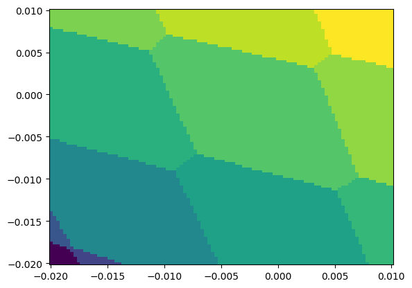
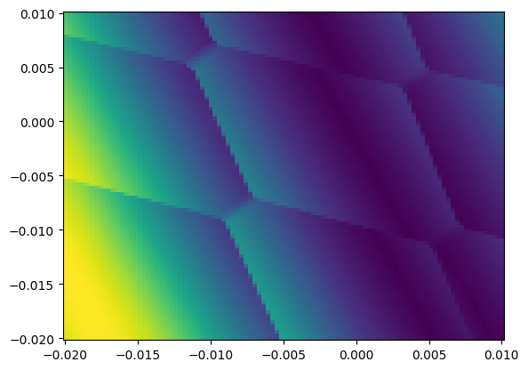
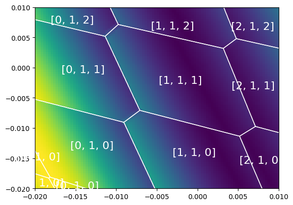

API Usage Tutorial¶
QDarts comes with two API-levels, the Experiment class that simplifies many of the most common applications at the cost
of flexibility. It is build on top of the low-level API, that gives access to the full power of QDarts. It is possile to mix both
APIs, for example, it is possible to construct a simulator using the Experiment class and then modify it using the low-level API.
In the following, we will explain the low-level API (The usage of the high-level api is described in the ipython notebook located in examples/figures_scipost.ipynb
that also reproduces all figures of our publication).
The code for this tutorial is provided in the ipython notebook examples/api_tutorial.ipynb. To keep the tutorial concise,
we only include the most important lines here that are needed to create the simulator,
but we skip definition of capacitance parameters etc. For this, directly reading the code is best.
The simulated device is a dcevice with 6 dots, of which three are sensor dots. It is controlled by 9 plunger gates, 1 for each dot and three that govern barrier gates between the three dots that are not sensor dots. The device is defined using a set of parameter matrices that govern the capacitances between the 9 gates and 6 dots, as well as the effect the 9 gates have on the barrier potential and therefore the tunnel coupling.
Construction of the capacitive simulation¶
As first step, we need to initialize the capacitive simulation.
It depends on a capacitive model, which creates the capacitive energy function and which depends on a number of
parameters, the capacitanc matrices between plunger gates and dots, C_DG, the interdot capacitances C_DD,
a lower bound on the gate voltages bounds_limits and optionaly a parameter ks that governs the deviation from the constant interaction
model and which can be set to None. With these parameters, creating the capacitive simulation is straight forward:
from qdarts.capacitance_model import CapacitanceModel
from qdarts.simulator import CapacitiveDeviceSimulator
capacitance_model = CapacitanceModel(C_DG, C_DD, bounds_limits, ks=ks)
capacitive_sim = CapacitiveDeviceSimulator(capacitance_model)
The capacitance simulation is purely classical and fits to the simulation of typical GaAs spin-qubit devices. It can only be used to query the ground state of the electron configuration given a set of gate voltages, as well as for each electron configuration the polytope of gate voltages that lead to the ground state configuration. Both features together are enough to plot a charge stability diagram and to exactly compute the boundaries of ground states within the diagram.
Plotting the Charge Stability Diagram¶
For ploting, we have two helper functions. First, get_CSD_states computes for a 2D grid of gate voltages the ground state. This is done by computing a standard 2D grid
that is then transformed into gate-voltage space. This transformation is done via a linear transformation \(v=m+P@v'\), where v is the full vector of gate plunger voltages,
in our case 9 values. The variables \(m\) and \(P\) are projection parameters, where \(m\) is a 9 dimensional vector and \(P\) a 9x2 matrix.
This defines a local 2D coordinate system transformation from the 2D grid \(v'\) to \(v\). With this, it is possible to create a plot in any two coordinate axes.
If we pick the grid of \(v'\) values as symmetric around 0, then \(m\) can be interpreted as the midpoint of the scan that we compute next.
the question is, how we can obtain these values. We can use the capacitive simulation to query points of interest. For example, when we are interested in the scan around a point on the state where there is a single electron on each inner dot and 5 electrons on each sensor dot, we can query it simply via:
m = capacitive_sim.boundaries([1,1,1,5,5,5]).point_inside
And if we want to perform a scan over the axes of the first and third plunger gate (which in our simulation are strongest coupled to the first and third inner dot) we can set:
P=np.zeros((N_gates,2))
P[0,0]=1
P[2,1]=1
Now that we have the projection, we can define the minimum and maximum values of \(v'\) in both directions and choose an image resolution.
Then, we can use get_CSD_data:
from qdarts.plotting import get_CSD_data
minV = [-0.01,-0.01]
maxV = [ 0.01, 0.01]
resolution = 100
sliced_csim, CSD_data, states = get_CSD_data(capacitive_sim, P,m, minV, maxV, resolution, target_state)
The last parameter is needed to provide the simulation with an initial guess of which might be the ground state of the bottom left corner of the plot.
This guess does not need to be exact. This function returns three things: first, a simulation sliced_csim that is defined on the transformed space \(v'\) and serves as a cache for
computed values. We will talk more about these slices later in the tutorial. The second result, CSD_data is a plottable 2D grid of values in which each ground state configuration is assigned
a different value. Finally, states is an array of all ground states for each grid point. We can plot this directly with matplotlib:
xs = np.linspace(minV[0],maxV[0],resolution)
ys = np.linspace(minV[1],maxV[1],resolution)
plt.pcolormesh(xs,ys,CSD_data.T)
The resulting grid is a rastered low resolution image.
{kind=link}
We can improve on this by plotting the exact boundaries between the two ground states using get_polytopes and plot_polytopes:
polytopes = get_polytopes(states, sliced_csim, minV, maxV)
plt.xlim(minV[0],maxV[0])
plt.ylim(minV[1],maxV[1])
plot_polytopes(plt.gca(),polytopes, skip_dots=[3,4,5], fontsize=16)
Note that this function computes the polytopes based on the low dimensional sliced simulation returned by get_CSD_data as well as its computed array of states. The function also prints the labels
of each state, and the option skip_dots allows to skip the part of the electron configuration we are not interested in. In this case, we skipped the 3 sensor dots.
Adding the last two plotting commands together, the resulting plot should look like this:
{kind=link}
Creation of a tunneling simulation¶
Now that we are able to generate a CSD, we want to also simulate tunneling and simulate a more realistic sensor signal.
For this, we need to create a few objects. First, we have to decide on a sensor simulator. The default choice is the NoisySensorDot
which simulates a sequence of sensor reflectometry peaks on one or more sensor dots:
sensor_model = NoisySensorDot(sensor_dots) #a model of the sensor dots that just needs which dot has which index
sensor_model.config_peak(g_max = 1.0, peak_width_multiplier = 20) #make the sensor peak broader
The constructor takes the indexes of the dots we want to use as sensor dots and each entry in this list will produce one sensor signal, the quantum capacitance measured
at the sensor dot. In the next line we add configuration options. g_max is just a scaling factor of the signal, which we leave at 1. The default sensor peak is simulated using only the
temperature of the dot and does not take broadening due to RF power into account. To compensate for this, we introduce a broadening factor that can make the peak wider. in our experience, values between
5 and 20 work well. There are more options to add here, for example the noise model of the signal, but for this tutorial, we do not add noise to keep it simple. You can check the documentation
of NoisySensorDot for more details on that.
Now, with our configured sensor dot, we create the simulation using tunnel coupling:
tunneling_sim = ApproximateTunnelingSimulator(capacitive_sim, #the underlying polytope simulation
tunnel_couplings, #symmetric tunnel coupling matrix T_ij which stores the tunnel coupling between dots i and j
temperature, #electron temperature, should be <=200mK
sensor_model) #our sensor model simulation
The tunneling simulation is very expensive, and by default it tries to minimize the number of basis elements for the computed Hamiltonians by excluding states with energies that are large compared to a chosen slack. By default the slack is 0, and thus all states that are not direct neighbours of our polytope (i.e., they do not share a facet) will be excluded. By increasing the slack proportional to the inverse temperature, we add more states that might still be relevant for tunneling. Further, the sensor dot simulation relies on the existence of states that add or remove an electron from the sensor dot. These can easily be excluded from the simulation and therefore we enfore in the simulation that states with additional electrons added/subtracted on the sensor dot are always present.
capacitive_sim.set_maximum_polytope_slack(5/tunneling_sim.beta) #adding slack to keep more states that are likely to affect the hamiltonian tunneling_sim.num_additional_neighbours[sensor_dots] = 2 #adding additional states for the sensor dots
Finally, we can create a similar plot as before. We use the same values for ´´m´´ and ´´P´´ as for the previous simulation, so that we can compare the two plots. Note that since the device has three sensor dots, the output is a 3 dimensional tensor where the last dimension is the number of sensor dots and we plot below only the output of the third sensor:
sensor_values = tunneling_sim.sensor_scan_2D(P, m, minV, maxV, resolution, target_state)
plt.pcolormesh(xs,ys,sensor_values[:,:,2].T)
This plots results in the sensor signal
{kind=link}
which again can be overlayed with our grid as before:
{kind=link}
Slicing and sensor compensation¶
The last plot shows that most of the sensor signal is very low and there is only a small area with a peak. This is because of the missing sensor compensation: the sensor peak
is capacitely affected by the plunger gates and thus changing the voltages changes the sensor signal. On the previous plot we already configured a wide width of the peak (peak_width_multiplier = 20`) to make
this effect small, but in reality many devices have very narrow and clear peaks.
What we need is sensor compensation, i.e., a change of coordinate system where the sensor plunger voltage is corrected for the cross-talk from the other gates so that we stay on the sensor peak as well as possible.
Moreover, the sensor peak is not centered. This is because we used as mid-point a point inside the polytope, but the sensor peaks are only on the boundaries between polytopes with different number of
electrons on the sensor dots. Thus, we need to change our coordinate system and tune the sensor to a better point.
This change of coordinate system is achieved in the simulator via slicing. In the previous examples, we defined a matrix P and vector m to generate the plot. We said that this changed the coordinate
system via \(v=m+Pv'\), where v' was a 2D case. This operation is called slicing and a simulation can be sliced via:
sliced_sim = sim.slice(P,m)
This works on all simulator objects and it returns a new simulation with gate voltages v'. This works in any dimensions, not just 2 and it is used in most simulation transformation code.
QDarts makes use of this in all its transformation code. For example, compensating the sensor dot:
compensated_tsim, _,m_comp = compensate_simulator_sensors(
tunneling_sim, #the simulator object to compensate
target_state=[1,1,1,5,5,5], #the electron configuration around which to compensate
compensation_gates= [6,7,8], #the ids of the sensor gate plungers.
sensor_ids = [3,4,5],#the ids of the sensor dots.
sensor_detunings = np.array([-0.0005,-0.0005,-0.0005]) #shift of the sensor dot plungers
)
This function returns the sensor compensated simulator object, which has its gates transformed such, that changing the gate voltages of any gate plunger other the sensor dot plungers does not change the
chemical potential of the sensor dot and thus leaves the sensor signal constant, except when a transition happens. This function relies on the user to supply the ids of the sensor dots and which elements of the voltage
vector are the sensor plungers (for example, the sensor dot with id 3 has plunger 6 as its plunger gate). Since in our model the capacitance parameters of the model vary with the occupation number, we have to
indicate the target state. Further, we have to supply a vector of sensor detunings that indicate on which position we are on the snesor detuning axis, i.e., the sensor peak. This value is relative to the peak maximum,
a value of 0 will return the exact peak max, which is a value that is typically avoided in practice due to the low signal to noise ratio. Additional to the sensor compensation object, the function returns also as third
return value the exact tuning point, i.e., the voltage vector that identifies the flank point for the given state. We can use this to plot a 2D charge stability diagram with the returned point as its center.
We also show in the point below how to query the internal modified capacitance simulator using compensated_tsim.poly_sim in order to compute the state boundaries:
sensor_values = compensated_tsim.sensor_scan_2D(P, m_comp, minV, maxV, resolution, target_state)
sliced_tsim, CSD_data, states = get_CSD_data(compensated_tsim.poly_sim, P,m_comp, minV, maxV, resolution, target_state)
polytopes = get_polytopes(states, sliced_tsim, minV, maxV)
Plotting the computed `sensor_values and polytopes as before, leads to
{kind=link}
As you can see, the sensors are almost perfectly compensated, leading to almost perfectly flat polytopes with no visible shape of a sensor peak. The [1,1,1] state indicates a color in the middle of the peak
and we can see how single electron transitions change the position on the peak due to the change of color on the polytopes. It is similarly possible to compensate any other gates and thus to compute virtual coordinates,
for this we refer to the documentation of axis_align_transitions.